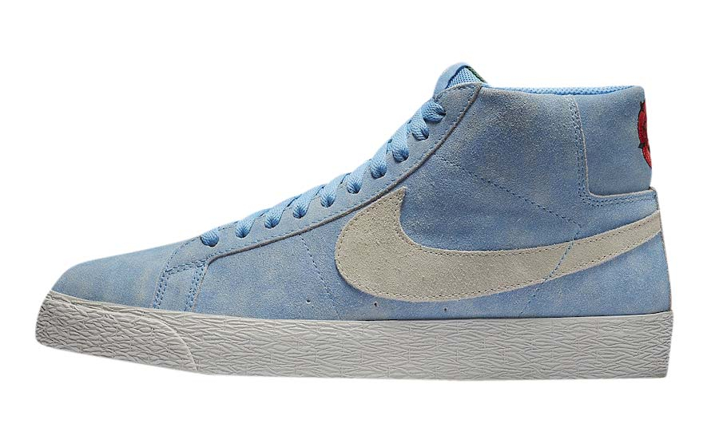

Описание
Nike SB Zoom Blazer Mid - это модификация знаменитых баскетбольных кроссовок, специально адаптированная для современных скейтбордистов. Верх изготовлен из натуральной кожи, обеспечивая мягкость, а средний профиль обеспечивает дополнительную поддержку голеностопа и плотную посадку, не ограничивающую движения. Для эффективной амортизации в обуви установлена специальная вставка Zoom Air. Вулканизированная конструкция обеспечивает максимальную гибкость и превосходное сцепление с любой поверхностью.